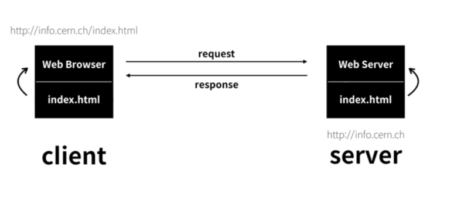
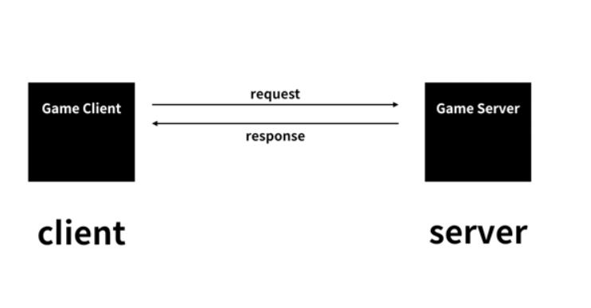

인터넷이 동작하는 기본적인 원리를 알아보자.
인터넷이 동작하기 위해서는 최소 2대의 컴퓨터가 필요하다. 1대는 인터넷이 아니고 3대는 본질적이지 않기 때문이다.
인터넷을 이용해서 웹을 만들기로 한다고 했을때 이를 위해 인터넷으로 연결된 2대의 컴퓨터를 장만한다.
그리고 2개의 프로그램을 개발한다. 각각의 프로그램에 웹브라우저와 웹서버라는 이름을 붙인다.
웹서버가 설치된 컴퓨터에는info.cern.ch라는 주소를 부여하고 이컴퓨터의 어떤 디렉토리에 index.html이라는 파일을 저장한다.
그리고 이번엔 웹브라우저가 설치된 컴퓨터의 주소창에 http://info.cern.ch/index.html이라는 주소를 입력하고 엔터를 친다.
그럼 어떤일이 일어나게 될까?

웹브라우저가 설치된 컴퓨터는 인터넷을 통해서 전기적인 신호를 info.cern.ch라는 주소의 컴퓨터에 보낸다.
그 전기적 신호에는 '나는 index.html이라는 파일의 코드를 원한다' 라는 메시지가 들어가있다.
그럼 info.cern.ch에 설치된 웹서버라는 프로그램이 디렉토리에서 index.html이라는 파일을 찾아서 그 내용을 전기적 신호로 바꾸어서
웹브라우저가 설치된 컴퓨터에 다시 신호를 보낸다.
그럼 웹브라우저가 설치된 컴퓨터에는 index.html파일의 내용(코드)가 도착하게되고 웹브라우저는 그 코드를 읽어서 웹페이지를 화면에 출력하게 되는 것이다.
이 관계를 보면 웹브라우저가 설치된 컴퓨터와 웹서버가 설치된 컴퓨터가 서로 정보를 주고 받는다.
이 중 웹브라우저가 깔린 컴퓨터는 정보를 요청하고 웹서버가 깔린 컴퓨터는 정보를 응답한다.
이 관계를 고객과 사업자에 비유하여 각각 클라이언트(clint)와 서버(server)라고 한다.
요청하는 컴퓨터는 웹브라우저 컴퓨터 이다. 다른말로 클라이언트 컴퓨터라고 하며
응답하는 컴퓨터는 웹서버 컴퓨터 이다. 서버 컴퓨터, 혹은 그냥 웹서버 라고 부르기도 한다.

만약 게임을 만든다면 내가 만든 게임회사의 컴퓨터는 서버 컴퓨터가 되고 설치된 프로그램을 게임서버라고 하며
누군가 내가만든 게임을 본인 컴퓨터에 설치하려 한다면 설치된 프로그램을 게임 클라이언트라고 하게 된다.
서버와 클라이언트는 인터넷을 이용하는 모든 정보시스템에 적용되는 문법과도 같다.
이것을 이해하고 경험이 쌓일수록 인터넷에 대한 이해가 높아질 것이다.
지금까지 HTML이라는 컴퓨터 언어의 사용법을 배웠다. 다시말해 웹브라우저를 제어하는 방법을 배운 것이다.
이해는 익숙해지기 위한 방법중 하나이다. 꾸준히 지속하자. 그럼 익숙해지게 될 것이다.
이제 웹서버를 배울 것이다. 웹서버에 익숙해지면 내가만든 컨텐츠를 인터넷을 사용할 수 있는 전세계의 누구나 사용할 수 있도록 할 수 있다.
웹서버에는 2개의 갈림길이 있다.
하나는 직접 웹서버를 설치하는 것이다. 이것은 어려울 것이다. 그러나 그 과정에서 많은 것을 배울 수 있게 된다.
또 하나의 갈림길은 웹서버를 제공해주는 업체를 이용하는 것이다. 이런 업체들을 웹호스팅 업체라고 한다.
이것은 쉽다. 그러나 많은 것들이 감춰져 있다.
웹호스팅으로 쉽게 목표를 달성해보고 웹서버를 직접 설치하는 방법으로 공부하는 것을 추천한다.
만약 웹서버가 어렵거나 시간이 없다면 웹호스팅만 공부해보자.